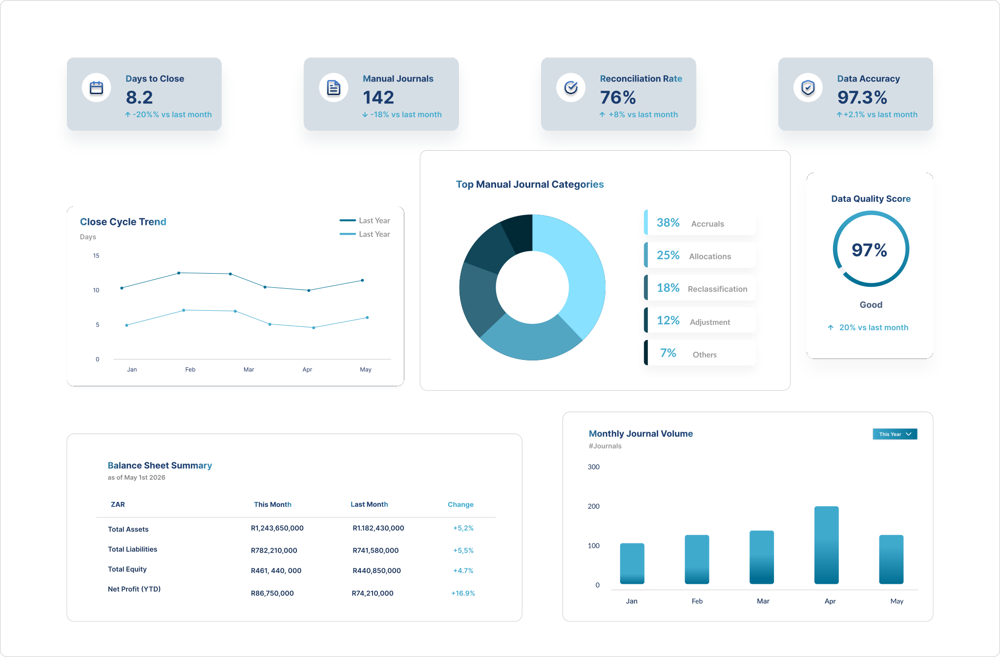
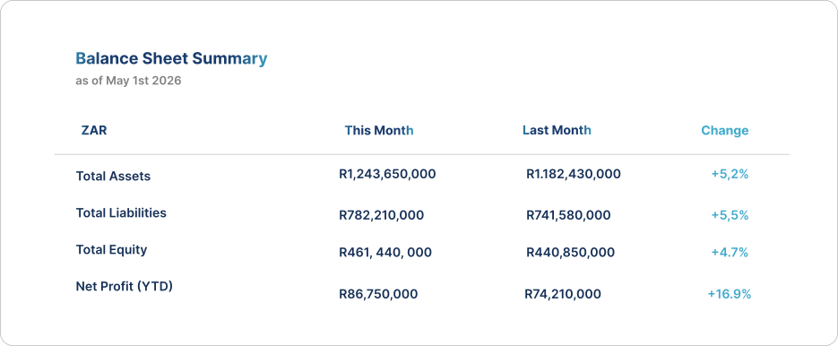

Slow Financial Close
Manual processes and unresolved issues delay month-end close.
We help organisations assess their SAP Finance environment, streamline processes, strengthen controls and improve performance, so you can close faster, reduce risk and make better business decisions.

Over time, finance environments become fragmented by manual workarounds, inconsistent processes, reporting gaps, and underutilised functionality.
Many organisations accept these inefficiencies as normal - even though they directly impact performance, visibility, and decision-making.
Manual processes and unresolved issues delay month-end close.
Reporting gaps make it harder to understand performance and act quickly.
Key functionality is not fully configured or effectively used.
Weak or inconsistent controls increase financial, regulatory and fraud risk.
Process errors and exceptions can quietly erode value.
Our Financial Health Check is a structured assessment of your SAP Finance environment, people, processes and data. We identify hidden inefficiencies and high-impact opportunities to:
Our focus is not just technical configuration - but how the finance environment performs operationally.
Understand your objectives and current state.
Review data, processes, controls and configuration.
Highlight risks, inefficiencies and opportunities.
Provide a prioritised roadmap with clear business outcomes.
Guide implementation and measure value.
Investment depends on organisational size, finance complexity, and scope of assessment.
This is not a generic audit or support engagement.
The Financial Health Check is a structured optimisation assessment focused on identifying measurable business improvement opportunities.

Our team brings deep SAP Finance expertise and a practical, business-focused approach thats helping you achieve measurable and lasting results.
Start with a structured discussion to determine whether a Financial Health Check is the right first step.
Book a 30-Minute Discussion